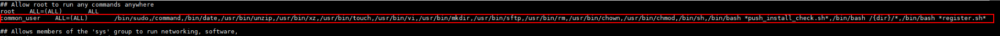

When installing ProtectAgent in automatic push mode, if User Type is set to Common User, you need to add the common user to sudoers first. Otherwise, ProtectAgent registration will fail.
Procedure
- Log in to the agent host as user root.
- Run the following command to search for the directory of the sudoers configuration file:
whereis sudoers
- Run the following command to change the permission on the sudoers configuration file:
chmod u+w /etc/sudoers
- Back up the source file.
mkdir /etc/backup_sudoers cp /etc/sudoers /etc/backup_sudoers
- Run the following command to open configuration file /etc/sudoers.
vim /etc/sudoers
- Check whether the Defaults requiretty field exists in the configuration file. If yes, delete this configuration.
- Add the following content to the configuration file, save the modification, and exit.
Take common user common_user as an example. Replace it with the actual common username used for ProtectAgent installation.
- If the sudo non-password-free mode is used, add the following content to the configuration file:
common_user ALL=(ALL) /bin/sudo,/bin/command,/bin/date,/usr/bin/unzip,/usr/bin/xz,/usr/bin/touch,/usr/bin/vi,/usr/bin/mkdir,/usr/bin/sftp,/usr/bin/rm,/usr/bin/chown,/usr/bin/chmod,/bin/sh,/bin/bash *push_install_check.sh*,/bin/bash /{dir}/*,/bin/bash *register.sh*Example:

- If the sudo password-free mode is used, add the following content to the configuration file:
common_user ALL=(ALL) NOPASSWD:/bin/sudo,/bin/command,/bin/date,/usr/bin/unzip,/usr/bin/xz,/usr/bin/touch,/usr/bin/vi,/usr/bin/mkdir,/usr/bin/sftp,/usr/bin/rm,/usr/bin/chown,/usr/bin/chmod,/bin/sh,/bin/bash *push_install_check.sh*,/bin/bash /{dir}/*,/bin/bash *register.sh*

The preceding added content is divided into three columns in a row. The first and second columns are separated by four characters, and the second and third columns are separated by seven characters. If the preceding content copied to the configuration file contains line feed characters, manually delete the line feed characters.
- If the sudo non-password-free mode is used, add the following content to the configuration file:
- View the configuration file to check whether the Defaults requiretty field is deleted and whether the user added in 7 exists.
cat /etc/sudoers